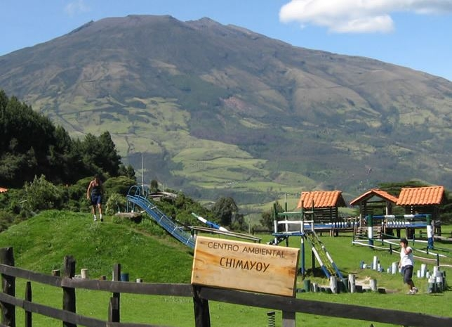
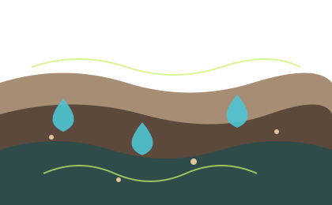
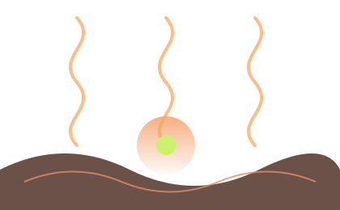
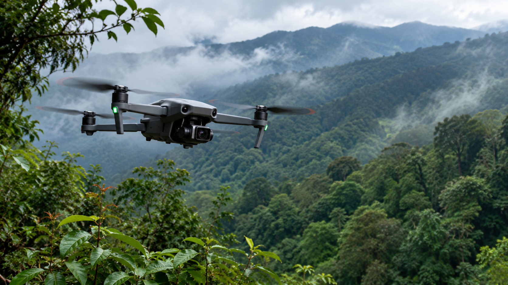
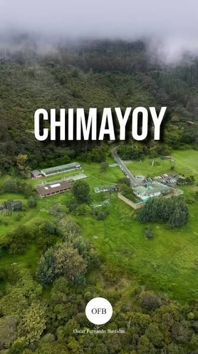

01GPMPRECIPITACIÓN
Precipitación
El aporte de agua desde la atmósfera. Su evolución permite reconocer periodos húmedos y secos y desviaciones respecto al comportamiento mensual.
GPM IMERG · mm/mesINVESTIGACIÓN Y OBSERVACIÓN DEL TERRITORIO
E.N.A. integra observación satelital, análisis de tendencias ambientales y observación terrestre complementaria para estudiar los cambios del sistema terrestre en Chimayoy, Nariño.
INVESTIGACIÓN AMBIENTAL · CHIMAYOY, NARIÑO
OBSERVACIÓN AMBIENTAL · CHIMAYOY
Los territorios cambian a través de procesos ambientales que se manifiestan en la disponibilidad de agua, el comportamiento de la vegetación y las condiciones térmicas de la superficie.
Reconocer esos cambios exige observar más allá de una imagen o de una medición aislada. Es necesario reunir registros obtenidos en distintos momentos, mantener criterios consistentes de análisis y estudiar cómo evoluciona cada variable. La observación satelital hace posible examinar áreas extensas y construir series temporales que permiten identificar patrones, desviaciones y posibles tendencias.
E.N.A. se desarrolla en el marco del desafío Earth System Trend Detective de NASA Space Apps Challenge 2026. Su investigación se concentra en Chimayoy, Nariño, y busca convertir información de observación de la Tierra en resultados comprensibles, verificables y útiles para interpretar la dinámica ambiental del área de estudio.

CHIMAYOY · PASTO, NARIÑOLa precipitación, la humedad del suelo, la vegetación y la temperatura superficial describen componentes distintos del sistema terrestre. Analizarlas en conjunto permite formular preguntas sobre sus variaciones temporales y explorar cómo coinciden sus patrones, sin asumir de antemano relaciones causales.
El aporte de agua desde la atmósfera. Su evolución permite reconocer periodos húmedos y secos y desviaciones respecto al comportamiento mensual.
GPM IMERG · mm/mes
02SMAPHUMEDAD DEL SUELOLos indicadores describen la fracción de humedad estimada en capas superficiales y profundas del suelo. Permiten explorar su variación temporal, sin interpretarse como mediciones directas en el terreno.
NASA POWER / MERRA-2 · fracción adimensional (1)Índices espectrales que permiten estudiar cambios en la actividad y cobertura vegetal, aplicando controles de calidad.
MODIS · NDVI / EVI
04LSTTEMPERATURA SUPERFICIALTemperatura radiométrica de la superficie terrestre; no equivale a la temperatura del aire medida en una estación.
MODIS · °CLas series se examinarán primero de manera individual, respetando sus unidades, resoluciones y frecuencias de observación. Posteriormente se compararán sus anomalías y periodos de variación para identificar coincidencias temporales que merezcan interpretación. Una coincidencia estadística no demuestra por sí sola una relación causal.

La investigación contempla incorporar un dron como plataforma de recolección de información en sectores de interés de Chimayoy. Sus imágenes y registros georreferenciados podrían aportar detalle local para documentar condiciones visibles del terreno y contrastar la interpretación espacial de los productos satelitales.
Esta integración exige correspondencia entre ubicación, fecha y tipo de observación. Una cámara RGB permite documentar elementos visibles, pero no mide directamente humedad del suelo ni temperatura superficial; esas variables requerirían sensores específicos. Por ello, el dron complementa la observación satelital y no sustituye las mediciones científicas de cada producto.
PREGUNTA DE INVESTIGACIÓN
La variabilidad ambiental forma parte del funcionamiento natural del sistema terrestre. Sin embargo, cuando una variable presenta cambios sostenidos, es necesario establecer si su comportamiento refleja una tendencia, dónde se manifiesta y qué magnitud alcanza. La dificultad aumenta porque las variables se miden con distintas resoluciones, escalas temporales y niveles de incertidumbre.
¿Qué tendencias y anomalías presentan la precipitación, la humedad superficial del suelo, la vegetación y la temperatura superficial en Chimayoy, Nariño, durante 2015–2025; dónde se manifiestan, cuál es su magnitud y qué evidencia estadística permite evaluar su significancia?
E.N.A. responde mediante un flujo de trabajo que selecciona productos de observación de la Tierra, delimita espacialmente el área de Chimayoy, organiza los registros en series temporales y analiza su comportamiento. Para cada variable se documentan la fuente, la unidad, la resolución, la frecuencia y los criterios de calidad antes de calcular estadísticas.
La plataforma permitirá explorar mapas, consultar tablas y visualizar la evolución temporal, el ciclo estacional y las anomalías. La dirección y magnitud de las tendencias se estimarán con métodos estadísticos apropiados; su significancia se evaluará considerando la estacionalidad, la autocorrelación y la disponibilidad de observaciones.
La información que pueda recopilarse mediante el dron se incorporará como observación complementaria en puntos críticos, con metadatos espaciales y temporales que permitan relacionarla con la escala de los productos satelitales.
Se determina cuáles variables presentan variaciones, anomalías o tendencias a partir de sus series temporales.
Se examina la distribución espacial de los registros dentro del área de estudio, respetando la resolución de cada producto.
Se estima la magnitud y dirección de la variación mediante unidades propias y tasas de cambio interpretables.
Se evalúa la evidencia estadística de las tendencias y se informa la incertidumbre junto con las limitaciones del análisis.
¿POR QUÉ CHIMAYOY?
Chimayoy fue seleccionado porque permite concentrar la investigación en un territorio andino concreto, con valor ambiental, educativo y de conservación. El Centro Ambiental, reconocido por CORPONARIÑO, desarrolla actividades relacionadas con educación ambiental, investigación y conservación ecológica. Estudiar sus condiciones ambientales aporta una oportunidad para convertir datos de observación de la Tierra en información vinculada con un lugar cuya protección tiene sentido local.
El relieve montañoso hace especialmente importante interpretar las variables en su contexto. La pendiente, la orientación de las laderas, la altitud, la cobertura vegetal, la nubosidad y la circulación del agua pueden producir diferencias ambientales a distancias cortas. Los productos satelitales no captan todos esos contrastes con el mismo nivel de detalle; por eso E.N.A. informa la resolución y el alcance de cada fuente, sin atribuir a los píxeles regionales una precisión que no poseen.
El desafío de tendencias del sistema terrestre tiene alcance global, pero una investigación aplicada necesita un caso delimitado. Chimayoy permite desarrollar y explicar un procedimiento reproducible, reconocer sus límites y evaluar qué información resulta útil para un territorio específico.
El propósito no es afirmar que el ecosistema se encuentra en deterioro ni anticipar una amenaza. Se busca establecer una línea de lectura ambiental que ayude a reconocer variaciones, formular preguntas de seguimiento y aportar información para la educación y la conservación.
El entorno de Pasto se encuentra en una región con actividad sísmica y volcánica monitoreada por el Servicio Geológico Colombiano. Estos antecedentes justifican mantener una mirada territorial responsable, pero no significan que E.N.A. mida sismos, evalúe amenaza geológica del predio o prediga terremotos. La actividad sísmica se presenta como contexto regional, no como variable ambiental del análisis.
Contexto institucional y geológico: CORPONARIÑO (2016) y Servicio Geológico Colombiano (2026). La información sísmica y volcánica no sustituye estudios de amenaza, geotecnia o gestión del riesgo.
La investigación satelital se complementa con una aplicación independiente de exploración aérea. Este módulo integra visualización tridimensional del dron, información de la misión, semaforización de condiciones observadas y herramientas de inteligencia artificial para apoyar la operación y la toma de decisiones durante la exploración. Su función es aportar una perspectiva cercana del terreno que complemente, sin reemplazar, la lectura ambiental de los satélites.
Los UAV permiten realizar observación remota, ampliar la cobertura de reconocimiento y recopilar información visual en zonas de difícil acceso.
Los algoritmos procesan imágenes para identificar objetos, reconocer patrones y extraer características relevantes de cada escena.
Los modelos de detección permiten localizar elementos de interés y aportar información estructurada para evaluar el entorno observado.
La aplicación reúne una vista 3D del dron, elementos de apoyo a la navegación, clasificación visual mediante semaforización y asistencia basada en inteligencia artificial. Este componente amplía las posibilidades de reconocimiento local y puede ayudar a documentar sectores que merezcan una revisión más detallada. Sus resultados deben interpretarse según los sensores, datos y funciones que realmente estén implementados.
Diseñar un subsistema de análisis visual basado en procesamiento de imágenes e inteligencia artificial que interprete el entorno capturado por un dron y genere recomendaciones de navegación a partir de la identificación de condiciones de riesgo.
¿QUÉ PODRÍA OCURRIR?
La página de análisis complementaria incorpora proyecciones de precipitación para el periodo 2025–2035, construidas a partir de registros históricos. Este componente amplía la lectura temporal de E.N.A.: mientras la investigación principal describe y evalúa el comportamiento observado en las fuentes históricas, las proyecciones exploran posibles continuidades o cambios bajo el método y los supuestos utilizados.
Las proyecciones no deben confundirse con pronósticos meteorológicos operativos ni con certezas sobre la lluvia que ocurrirá en una fecha determinada. Su interpretación depende de la serie histórica, el procedimiento estadístico, los supuestos y la incertidumbre del modelo. Por esa razón, E.N.A. las presenta como un módulo complementario y no como sustituto de los resultados observados.
Precipitación · estimaciones basadas en datos históricos
La lectura de escenarios futuros se mantiene diferenciada del análisis retrospectivo 2015–2025.
Acceder a proyecciones de precipitaciónLa metodología organiza el trabajo en etapas conectadas. Cada módulo prepara o interpreta la información que recibe del anterior, manteniendo una arquitectura comprensible y ampliable.
Organización de imágenes representativas según las condiciones observadas en los entornos de exploración.
Preparación de imágenes mediante OpenCV: adquisición, normalización y operaciones que facilitan el análisis posterior.
Identificación de personas, vehículos, animales y objetos relevantes mediante YOLOv8 y Ultralytics.
Interpretación de los elementos detectados y asignación de un nivel de riesgo a partir de criterios definidos.
Generación de orientaciones para la navegación y almacenamiento de eventos para su revisión posterior.
La organización del conjunto de imágenes establece una referencia para identificar condiciones relevantes durante una misión de exploración.
Áreas abiertas, caminos despejados o espacios con margen suficiente para el desplazamiento.
Árboles, rocas, estructuras, postes y otros elementos que pueden limitar la trayectoria.
Ríos, lagunas, inundaciones o acumulaciones de agua que requieren atención durante la exploración.
Imágenes que aún no han sido etiquetadas o cuya categoría requiere validación.
El flujo propuesto conserva la separación entre captura, procesamiento, detección, evaluación y almacenamiento. Esta estructura facilita la trazabilidad de la información generada durante cada misión.
Los eventos consolidados permiten construir indicadores sobre objetos, obstáculos y zonas de riesgo identificadas durante la exploración.
CASO DE ESTUDIO · COLOMBIA
Chimayoy, en el entorno de Pasto, Nariño, constituye el área piloto de la investigación ambiental de E.N.A. La selección de esta zona permite delimitar la consulta de productos satelitales y estudiar la evolución temporal de variables relacionadas con el agua, la vegetación y las condiciones térmicas de la superficie.
El análisis satelital constituye la base de la investigación. La observación terrestre mediante dron se plantea como un recurso complementario para documentar puntos críticos y aportar detalle local a la interpretación de los patrones regionales.
Las fotografías documentan el entorno del Centro Ambiental Chimayoy y ayudan a contextualizar el área de estudio. No sustituyen las imágenes satelitales ni se utilizan como mediciones cuantitativas.



Fotografías externas: Υ.Γ., Centro Ambiental Chimayoy, acceso y museo, Wikimedia Commons, licencia CC BY-SA 4.0. Se conserva la atribución y la licencia de compartir igual.
Los productos de observación de la Tierra permiten consultar variables ambientales con cobertura espacial y temporal. La selección de cada producto depende de su resolución, periodo disponible, unidades y adecuación a la escala de Chimayoy.
GPM IMERG mensual · NASA
Producto 3IMERGM V07B. La tasa original precipitation se documenta en mm/h y el archivo procesado conserva también la acumulación mensual en mm/mes. La serie disponible cubre enero de 2020 a agosto de 2025: 63 meses observados y cinco meses marcados como faltantes. Su resolución de 0.1° (aprox. 10 km) aporta contexto regional, no una medición puntual del sitio.SMAP · NASA
Se utilizará SMAP L4 SPL4SMGP.008: estimaciones de humedad superficial y de zona radicular con resolución aproximada de 9 km y frecuencia de 3 horas. Es un producto de asimilación y modelación; ofrece estimaciones de humedad superficial y de zona radicular, por lo que ambas capas deben distinguirse en el análisis. Los periodos de versiones distintas se documentarán para evitar saltos artificiales.NASA POWER / MERRA-2 · 2015–2025
Se integraron GWETTOP (humedad superficial, 0–5 cm), GWETROOT (zona radicular) y GWETPROF (perfil del suelo), con 132 registros mensuales por indicador. Los valores se conservan como fracción adimensional (1). Son estimaciones regionales modeladas/asimiladas: no corresponden a mediciones in situ, no equivalen a contenido volumétrico en m³/m³ y no son datos SMAP.MODIS Terra · NDVI / EVI
MOD13Q1 V061 entrega NDVI y EVI cada 16 días a 250 m. Las series se extrajeron sobre la geometría catastral de referencia, aplicando el factor 0,0001 y conservando únicamente píxeles con Pixel Reliability = 0. Los índices describen la respuesta espectral de la vegetación; no son mediciones directas de biomasa o biodiversidad.MODIS Terra · MOD11A2 V061
Compuestos de ocho días a 1 km. Se aplicó el factor de escala 0,02 y la conversión a °C, conservando únicamente observaciones con bits QA obligatorios = 00. La cobertura nocturna es menor por falta de capas QC coincidentes. Se interpreta como contexto térmico regional, no como temperatura del aire ni detalle de cada parcela.La capa del mapa muestra imágenes satelitales para ubicar visualmente el área de estudio. Los gráficos cuantitativos se calculan a partir de los archivos científicos descargados y filtrados por coordenadas; una imagen satelital no sustituye esos datos numéricos.
El mapa presenta la geometría catastral de referencia utilizada en las extracciones y el punto de localización de Chimayoy. El polígono tiene aproximadamente 49,10 ha; se utiliza como delimitación operativa de análisis y no como certificación del perímetro institucional completo del Centro Ambiental.
Selecciona una variable y consulta todos sus registros disponibles, un año o un mes específico. Puedes comparar periodos, explorar las gráficas y descargar la serie filtrada junto con sus metadatos.
Conectando las series procesadas incluidas en E.N.A.…
Consultar y descargar archivos ↓| Fecha | Valor | Unidad | Anomalía |
|---|---|---|---|
| Carga un archivo para consultar las observaciones procesadas. | |||
Serie temporal: muestra la evolución de la variable en el tiempo.
Ciclo anual: resume el comportamiento medio de cada mes dentro del periodo seleccionado.
Anomalías: expresan la diferencia frente al promedio del mismo mes del periodo seleccionado; son descriptivas y cambian al modificar el intervalo.
Tabla: permite consultar fechas, valores, unidades y desviaciones. La cantidad de observaciones depende de la cobertura y los filtros de calidad de cada producto.
Los archivos se ofrecen en su formato original o procesado. Revisa el manifiesto para conocer fuente, unidad, cobertura y limitaciones antes de reutilizarlos.
Esta lectura resume las observaciones procesadas que ya están disponibles. Los indicadores descriptivos se actualizan al seleccionar una variable en el explorador; no sustituyen las pruebas estadísticas de tendencia ni demuestran relaciones causales.
Los indicadores se completarán a partir de las series incluidas en el proyecto.
Selecciona una variable en el explorador para consultar su resumen descriptivo, cobertura temporal, promedio y valores extremos.
Las observaciones se interpretan respetando su unidad, resolución, frecuencia y control de calidad. GPM y NASA POWER aportan contexto regional; MODIS NDVI/EVI y LST representan productos satelitales con escalas espaciales distintas. La geometría utilizada es una referencia catastral operativa, no una certificación del perímetro institucional del parque.
Ingeniería Electrónica · Séptimo semestre
Universidad Nacional Abierta y a Distancia (UNAD) · CEAD Pasto, Nariño
Ingeniería Electrónica · Décimo semestre
Universidad Nacional Abierta y a Distancia (UNAD) · CCAV Zipaquirá
Ingeniería de Sistemas · Cuarto semestre
Universidad Nacional Abierta y a Distancia (UNAD) · CEAD Santa Marta
La investigación completa, la auditoría de los insumos y el manifiesto de cobertura acompañan esta plataforma para permitir la consulta y reproducción del trabajo.
La observación satelital permite reconocer patrones regionales y cambios de largo plazo. El subsistema UAV proyectado complementará ese análisis con imágenes RGB georreferenciadas y observaciones localizadas, una vez se realicen los vuelos y se documenten sus condiciones de captura. E.N.A. distinguirá siempre las mediciones de campo de las estimaciones satelitales.